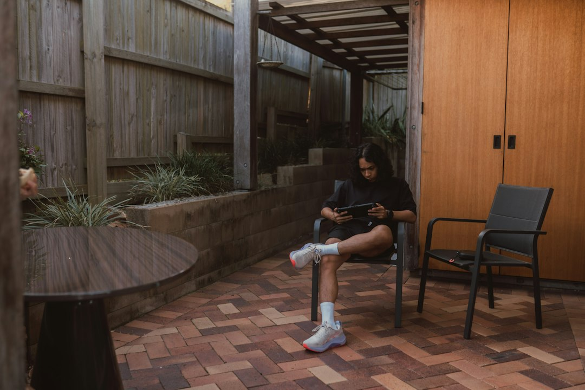

For a Brisbane home charger project, start with four facts: where the vehicle normally parks, where the charger could sit, how a cable may reach the switchboard and whether an owner, strata or building-management approval question exists. Fixed electrical work must be handled by an appropriately licensed Queensland electrical contractor. A switchboard upgrade is not automatic, because the board condition, capacity and proposed charging load need to be assessed first.
For homeowners comparing home ev charger installation brisbane options, the useful starting point is the parking position, the switchboard path and the approvals question before choosing equipment.
Home Ev Charger Installation Brisbane Explained
EV Charger Installation Brisbane frames a home charger enquiry around the practical conditions at the property: where the vehicle normally sits, where the charger could be mounted and how the cable route might reach the switchboard. That makes the first conversation more useful than asking for a generic charger recommendation, because the site layout affects what can be assessed.
Before requesting a project review, write down the normal vehicle position, proposed equipment location, switchboard access and any owner or building-management questions. For an apartment, townhouse or managed property, the approval question may be as important as the hardware choice. For a detached house, the switchboard location and parking arrangement may drive most of the early discussion.
- Photograph the parking bay, garage wall or driveway area where the vehicle usually sits.
- Note whether the cable path would cross a walkway, shared space or difficult access point.
- Check whether someone else must approve fixed equipment before work can proceed.
- Keep the enquiry factual, because quotes and estimates are indicative and depend on individual circumstances.
Circuit and switchboard questions
The published guidance does not say every charger needs the same circuit arrangement. It says a contractor assesses the intended charger load, the existing switchboard and the cable route before specifying the circuit and protection. That is the right order for a homeowner to follow: site first, specification second.
A switchboard upgrade should also be treated as an assessment outcome, not an assumption. The source page says an upgrade is not automatic and depends on the observed board condition, available capacity and the proposed charging load. In practical terms, that means a quote request should leave room for inspection findings rather than trying to lock in a final answer from photos alone.
Useful questions to ask during the assessment include whether the existing board has suitable capacity, where protection would be located, whether the proposed charger position changes the cable route and whether any building approval issue should be resolved before booking installation. These are decision questions, not price-shopping filler.
Who this guide applies to
This guide is for Brisbane homeowners and occupants preparing a residential EV charger enquiry. It is most relevant where the vehicle has a regular parking spot and the property owner wants to understand what information to gather before a licensed electrical contractor assesses the job.
It also helps people in managed buildings prepare a cleaner brief. The source page specifically asks for owner or building-management questions to be recorded before an assessment. That does not mean approval is always required, but it does mean shared ownership, strata-style control or managed access should be raised early.
For broader local context on charger enquiries, the related guide to EV charger installation in Brisbane sits alongside this home-focused page. Use that as a companion reference, then bring the discussion back to the exact parking position, equipment location and switchboard access at the property.
How to brief the quote request
A concise brief should make the property easy to understand without pretending to be a technical design. The enquiry form on the source page asks for the suburb or postcode and invites project details, including access and nearby structures. It also notes that photos can be provided later if a provider asks for them.
Keep the brief grounded in observable facts. Say where the car parks, whether the charger would be inside a garage or in another suitable position, how close the switchboard is in ordinary walking terms and whether access is clear. If the route is uncertain, say so. A contractor can then decide what must be inspected before specifying the circuit and protection.
- Parking: describe the usual vehicle position rather than an occasional parking spot.
- Equipment position: identify the wall, post or area being considered.
- Switchboard: explain whether access is straightforward, restricted or managed.
- Approvals: note any owner, body corporate or building-management question.
- Photos: prepare them, but follow the provider's request on what is needed.
Reading quote limits carefully
The source page is careful about quote language. It says quotes, prices, rates and estimates are indicative only, subject to individual circumstances and revision, and are not a binding offer or professional advice. That wording matters because the final scope can depend on site assessment findings.
Submitting the enquiry form also does not confirm provider availability, timing or acceptance of the work. Treat the form as the start of assessment, not a booked installation. A realistic next step is to gather the property details, ask what must be inspected and wait for the contractor to confirm whether the work can be accepted.
The cleanest homeowner decision is to separate three things: the charger you want, the electrical work the site can support and the permissions needed for that particular property. When those are separated, the quote conversation is less likely to blur a preference into a confirmed scope.
- Map the parking position. Record where the vehicle normally parks and whether the charging cable would reach the proposed equipment position without creating an access issue.
- Check the switchboard access. Note where the switchboard is and whether a contractor can inspect it without building-management or owner coordination.
- List approval questions. Write down any owner, strata, body corporate or building-management matter before requesting an assessment.
- Request assessment. Use the prepared details to ask for a review, remembering that acceptance, timing and final scope are not confirmed by the enquiry form.
| Situation | What to prepare | What the assessment resolves |
|---|---|---|
| Detached home with regular parking | Vehicle position, proposed charger location and switchboard access | Available supply, circuit and protection requirements, and whether a board upgrade is needed |
| Managed building or shared property | Parking location, equipment position and owner or building-management questions | Whether access or building approvals need to be addressed before installation |
Common questions
Does a home EV charger need its own circuit? The source page says a contractor assesses the intended charger load, existing switchboard and cable route before specifying the circuit and protection. Do not assume the answer before the site has been assessed.
Will the switchboard need to be upgraded? Not automatically. The published guidance says an upgrade depends on the observed board condition, capacity and proposed charging load.
Who can carry out the fixed electrical work? Fixed electrical work must be completed by an appropriately licensed Queensland electrical contractor. The homeowner's role is to prepare accurate site information for assessment.
Does submitting an enquiry confirm the installation? No. The source page says submitting the form does not confirm provider availability, timing or acceptance of the work.
This guide covers residential EV charger enquiry preparation for Brisbane properties before a licensed electrical assessment.